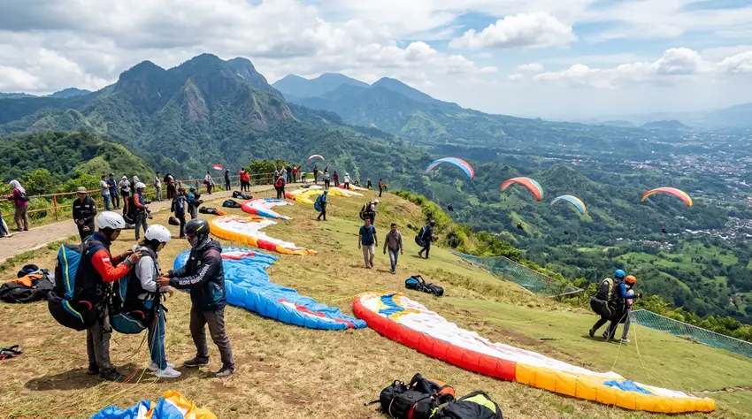

Harga paralayang tandem di Gunung Banyak umumnya berada di kisaran ratusan ribu rupiah per penumpang, bergantung pada paket, musim, dan layanan dokumentasi.
Ringkasan Inti
- Tarif paralayang tandem di Gunung Banyak dapat berubah menurut musim, paket, dan kebijakan pengelola.
- Penerbangan tandem umumnya berlangsung sekitar 10 hingga 15 menit, tergantung angin dan kondisi udara.
- Penumpang tidak perlu pengalaman, karena pilot yang mengendalikan sayap.
- Dokumentasi foto dan video sering ditawarkan sebagai tambahan biaya atau paket.
- Cuaca dan angin menentukan apakah penerbangan dapat dilaksanakan pada hari itu.
Apa Itu Paralayang Tandem di Gunung Banyak?
Paralayang tandem di Gunung Banyak adalah penerbangan berdua, satu pilot dan satu penumpang, dengan lepas landas dari area perbukitan Gunung Banyak di Kota Batu.
Gunung Banyak berada di wilayah Kota Batu, Jawa Timur, dan dikenal sebagai salah satu titik paralayang yang populer. Menurut informasi umum yang beredar dari pengelola dan komunitas, area lepas landas berada pada ketinggian sekitar 1.300 meter di atas permukaan laut. Angka ini bersifat perkiraan dan sebaiknya dikonfirmasi ke pengelola.
Format tandem dirancang untuk pemula. Pilot berpengalaman mengatur arah, kecepatan, dan pendaratan, sementara penumpang cukup mengikuti instruksi. Pengalaman ini cocok untuk wisatawan yang ingin merasakan pemandangan dari udara tanpa kursus panjang.
Berapa Harga Paralayang Tandem di Gunung Banyak?
Harga paralayang tandem di Gunung Banyak umumnya mulai dari ratusan ribu rupiah per penumpang untuk satu kali penerbangan, dan dapat berbeda menurut paket serta periode kunjungan.
Karena tarif dapat berubah, angka pasti perlu dikonfirmasi langsung kepada pengelola atau komunitas paralayang setempat. Sebagai gambaran umum, tarif dasar biasanya mencakup satu kali penerbangan tandem dan peralatan standar. Layanan tambahan seperti rekaman video, foto udara, atau penerbangan dengan durasi lebih panjang sering dikenakan biaya terpisah.
Wisatawan sebaiknya meminta rincian tertulis atau pesan resmi mengenai tarif, apa saja yang termasuk, dan kebijakan jika penerbangan ditunda karena cuaca. Langkah ini mencegah kesalahpahaman di lokasi.
Apa Saja yang Memengaruhi Harga Paralayang Tandem?
Harga paralayang tandem dipengaruhi oleh musim kunjungan, paket yang dipilih, layanan dokumentasi, durasi terbang, dan kebijakan pengelola.
- Musim dan hari kunjungan: akhir pekan serta libur panjang umumnya lebih ramai dan tarifnya dapat berbeda dibanding hari kerja.
- Paket dokumentasi: foto dan video dari kamera yang dibawa pilot sering menjadi biaya tambahan.
- Durasi dan rute: penerbangan yang lebih panjang atau berputar di area tertentu dapat memiliki tarif berbeda.
- Jumlah peserta: kelompok besar kadang mendapat kebijakan khusus.
- Reservasi: pemesanan lebih awal dapat membantu memastikan ketersediaan pilot, terutama saat ramai.

Area landasan take off paralayang Gunung Banyak yang menyuguhkan pemandangan spektakuler Kota Batu.
Berapa Lama Durasi Terbang Tandem di Gunung Banyak?
Durasi terbang tandem di Gunung Banyak umumnya sekitar 10 hingga 15 menit di udara, tidak termasuk waktu persiapan, briefing, dan perjalanan menuju area lepas landas.
Durasi sebenarnya bergantung pada kondisi angin dan arus udara naik. Pada hari dengan angin yang mendukung, penerbangan dapat terasa lebih lama. Pada kondisi kurang ideal, waktu di udara dapat lebih singkat. Wisatawan sebaiknya menyisihkan waktu total satu hingga dua jam untuk keseluruhan proses, mulai dari registrasi hingga mendarat.
Apa Syarat dan Batasan Terbang Paralayang Tandem?
Syarat terbang paralayang tandem umumnya mencakup batas berat badan, kondisi kesehatan yang memadai, dan kesediaan mengikuti arahan pilot, dengan ketentuan rinci ditentukan pengelola.
Penumpang biasanya diminta mengisi pernyataan kesehatan dan keselamatan. Batas berat badan dan usia dapat berbeda antarpengelola. Orang dengan kondisi tertentu, misalnya masalah jantung, cedera tulang belakang, atau kehamilan, sebaiknya berkonsultasi dengan tenaga kesehatan sebelum mendaftar. Informasi di artikel ini bersifat umum dan bukan pengganti nasihat medis.
Pilot dapat menolak penerbangan bila kondisi cuaca atau penumpang tidak memenuhi standar keselamatan. Keputusan tersebut bertujuan melindungi semua pihak dan sebaiknya dihormati.
Bagaimana Cara Mempersiapkan Diri Sebelum Terbang Tandem?
Persiapan terbang tandem meliputi mengenakan pakaian nyaman dan sepatu tertutup, sarapan ringan, menyimpan barang berharga, serta mendengarkan briefing pilot dengan saksama.
Berikut langkah praktis:
- Kenakan celana panjang atau pakaian yang tidak menghalangi gerak dan sepatu tertutup yang kuat.
- Makan ringan sebelum terbang, tetapi hindari makan terlalu banyak.
- Titipkan ponsel, dompet, dan barang lepas, kecuali kamera yang diizinkan pengelola.
- Ikuti instruksi lari kecil saat lepas landas dan posisi kaki saat mendarat.
- Beri tahu pilot bila mudah mabuk perjalanan atau takut ketinggian.
Kapan Waktu Terbaik Terbang Paralayang di Gunung Banyak?
Waktu terbaik terbang paralayang di Gunung Banyak umumnya pagi atau sore hari pada musim kemarau, saat angin relatif stabil dan jarak pandang baik.
Paralayang sangat bergantung pada angin. Angin terlalu kencang, terlalu lemah, atau berubah-ubah dapat membuat penerbangan ditunda. Pada musim hujan, kabut dan hujan dapat mengurangi jarak pandang dan keselamatan. Memantau prakiraan cuaca BMKG di bmkg.go.id membantu menentukan jadwal kunjungan yang realistis.
Wisatawan disarankan memiliki rencana cadangan, misalnya menambah satu hari di Batu, agar penundaan cuaca tidak mengganggu agenda perjalanan.
Apakah Paralayang Tandem Aman bagi Pemula?
Paralayang tandem umumnya cocok bagi pemula karena pilot berpengalaman mengendalikan penerbangan, tetapi tingkat keamanan tetap bergantung pada cuaca, peralatan, dan kepatuhan prosedur.
Tidak ada aktivitas udara yang bebas risiko. Karena itu, pilih penyelenggara yang menjelaskan prosedur dengan jelas, memeriksa peralatan, dan tidak memaksakan terbang ketika kondisi buruk. Hindari tawaran yang menjanjikan kepastian terbang tanpa memperhitungkan cuaca. Klaim keamanan mutlak bukan tanda penyelenggara yang profesional.
Bagaimana Memilih Penyelenggara Paralayang yang Tepat?
Memilih penyelenggara paralayang yang tepat berarti memeriksa pengalaman pilot, kondisi peralatan, transparansi tarif, ulasan terbaru, dan prosedur keselamatan yang dijelaskan secara terbuka.
Parameter penilaian yang dapat digunakan:
- Pilot: tanyakan pengalaman dan sertifikasi yang dimiliki.
- Peralatan: perhatikan kondisi sayap, harness, dan helm.
- Transparansi: pastikan tarif, kebijakan penundaan, dan biaya tambahan dijelaskan di awal.
- Ulasan: baca ulasan terbaru, bukan hanya yang lama.
- Layanan: tanyakan apakah transportasi ke area lepas landas dan dokumentasi sudah termasuk.
FAQ
Kisarannya umumnya ratusan ribu rupiah per penumpang untuk satu kali terbang tandem. Angka pasti dapat berubah menurut paket dan musim, jadi konfirmasi ke pengelola sebelum berangkat.
Tidak selalu. Beberapa penyelenggara menawarkan dokumentasi sebagai paket tambahan dengan biaya terpisah. Tanyakan rincian layanan sebelum membayar agar tidak ada biaya tak terduga.
Ya. Angin, hujan, atau kabut dapat membuat penerbangan ditunda atau dibatalkan demi keselamatan. Tanyakan kebijakan penjadwalan ulang atau pengembalian dana sebelum memesan.
Boleh. Format tandem dirancang untuk pemula, dengan pilot yang mengendalikan sayap. Penumpang cukup mengikuti arahan saat lepas landas dan mendarat.